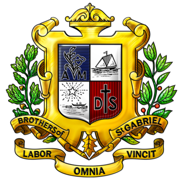

กรอบสาระงานของฝ่ายเพื่อให้คณะกรรมการได้ศึกษาก่อนการประชุมครั้งแรก · ภายใต้แผนยุทธศาสตร์ ๖ ปีของมูลนิธิฯ และมติสมัชชาแขวง
Per ประกาศ Special Assignments and Responsibilities 2026-2027 ลงนาม ๑๗ พ.ค. ๒๕๖๙ โดยภราดาสุรกิจ ศรีสราญกุลวงศ์ เจ้าคณะแขวง · ฝ่ายนี้บูรณาการการบริหารเทคโนโลยีสารสนเทศและทรัพยากรมนุษย์เข้าด้วยกัน · ดำเนินงานคู่ขนานเป็น ๒ สาย เพื่อให้มีความลึกเชิงเทคนิค และเชื่อมต่อในจุดที่ทั้งสองสายมาบรรจบกัน
การที่ฝ่าย IT & HRM เป็นฝ่ายเดียวกัน ทำให้สามารถสร้าง integration ที่ฝ่ายแยกทำไม่ได้ — เป็นข้อได้เปรียบเชิงระบบ
ทุกแผนงานของฝ่ายต้องเชื่อมโยงตามลำดับนี้ เพื่อให้บรรลุเป้าหมายคุณภาพระดับสากลของมูลนิธิฯ
แต่ละสายงานมี ๓ บทบาทหลัก · เลขานุการ · ผู้บันทึก · ผู้ประสานงาน · เพื่อให้การดำเนินงานเป็นระบบและบรรลุเป้าหมายคุณภาพ
ตามประกาศ Special Assignments and Responsibilities 2026-2027 · สายงานของแต่ละท่านจะกำหนดร่วมกันในการประชุมครั้งแรก
| # | ชื่อ | บทบาท | สายงาน |
|---|---|---|---|
| ๑ | Bro. Supanun Khantapreecha | Chairman | ICT + HRM |
| ๒ | Bro. Surasit Sukchai | Advisor | ICT + HRM |
| ๓ | Bro. Arwut Silaket | กรรมการ | เลือกสายงาน |
| ๔ | Bro. Manit Sakonthawat | กรรมการ | เลือกสายงาน |
| ๕ | Bro. Sarawut Yuchompoo | กรรมการ | เลือกสายงาน |
| ๖ | Bro. Kullachart Juntachoto | กรรมการ | เลือกสายงาน |
| ๗ | Bro. Sirichai Phangrak | กรรมการ | เลือกสายงาน |
| ๘ | Bro. Palakorn Pianpan | กรรมการ | เลือกสายงาน |
| ๙ | Bro. Patcharapakorn Langbubpha | กรรมการ | เลือกสายงาน |
| ๑๐ | Bro. Kornkavee Yindeevech | กรรมการ | เลือกสายงาน |
| ๑๑ | Bro. Natton Suphon | กรรมการ | เลือกสายงาน |
| ๑๒ | Bro. Panuwat Mouentup | กรรมการ | เลือกสายงาน |
| ๑๓ | Bro. Apisit Ngamwong | Secretary & Coordinator | ICT |
| ๑๔ | Bro. Thanapoom Saiprom | กรรมการ | เลือกสายงาน |
| ๑๕ | ภราดากฤษฎา งามวงศ์ (Bro. Krissada Ngamwong) | Secretary & Coordinator | HRM |
ขอเชิญกรรมการทุกท่านศึกษากรอบงานทั้ง ๒ สาย แล้วเลือกสายงานที่ท่านสนใจและถนัด · ในกรณีที่ท่านสนใจทั้ง ๒ สาย กรุณาระบุลำดับความสนใจ · ส่งคำตอบกลับมาที่เลขานุการของฝ่าย ก่อนการประชุมครั้งแรก เพื่อนำเข้าหารือร่วมกัน
หรือตอบกลับผ่าน E-Office ของมูลนิธิฯ
ขอความอนุเคราะห์ศึกษาก่อนเข้าร่วมการประชุมครั้งแรก เพื่อให้การหารือบนพื้นฐานเดียวกัน